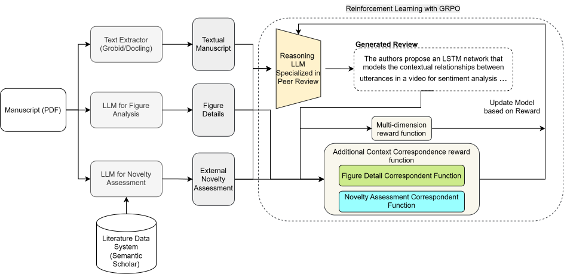

Auxiliary contexts
The model receives manuscript text plus figure descriptions and novelty assessments produced from external scholarly signals.
arXiv:2604.00248
Automated peer review via reinforcement learning with auxiliary context.
REM-CTX trains an 8B-parameter review model with GRPO and rewards that encourage generated reviews to use manuscript figures and external novelty assessments accurately.

Core idea
The model receives manuscript text plus figure descriptions and novelty assessments produced from external scholarly signals.
FCRF and NCRF score whether review sentences that discuss the auxiliary context are relevant and consistent with it.
Training combines quality coverage, figure correspondence, novelty correspondence, and a structured reasoning format reward.
Static Pages demo
Findings from the paper
Across six baselines — prompted and structured Sonnet 4.5, the multi-agent MARG and MAMORX systems, base Qwen3-8B, and the quality-only REMOR — REM-CTX reports the strongest total aspect coverage on manuscripts from computer, biological, and physical sciences.
An ablation over four reward configurations shows FCRF clearly drives figure correspondence, while novelty correspondence stays comparably high whether or not NCRF is included — the two rewards have different degrees of leverage on their respective grounding signals.
During training, the criticism aspect is negatively correlated with novelty correspondence and with several quality dimensions — importance & relevance, praise, and results & discussion — motivating future grouped or adaptive reward design.
Variants trained for 7 epochs on identical data (Section 5.1). FCRF clearly maximizes figure correspondence (Full: 0.60 vs. None: 0.54). Novelty correspondence is more evenly spread — the full model (0.56) stays high and comparable to the None variant (0.58) — suggesting the quality and format rewards alone already elicit novelty-grounded language, with NCRF adding a smaller, more consistent lift over the Fig-only and Novel-only variants. Separately, computer science manuscripts score significantly higher overall than biological sciences (t(208)=3.07, p=.003), with physical sciences in between.
Qwen3-8B · no correspondence rewards
“The paper presents a novel approach to multi-modal sentiment analysis by incorporating contextual relationships among utterances using LSTM networks…”
REM-CTX
“The authors propose an LSTM network that models the contextual
relationships between utterances in a video for sentiment analysis. The
paper is well-written and the proposed model is interesting, but the
experimental results are not convincing enough to recommend
acceptance.”
Excerpts adapted from the paper's qualitative example. REM-CTX reasons over the auxiliary context before responding, then produces a shorter, more evaluative final review than the ungrounded baseline.
Resources
PeerRTEx: 234 full-text manuscripts with paired human reviews — Computer Science (130), Biological Sciences (80), and Physical Sciences (24) — drawn from the Transparent Peer Review initiative, ACL Anthology, and NeurIPS.
pawin205/PeerRTEx →Sentence-level relevance labels between review text and manuscript figures, used to train the figure correspondence reward (FCRF), which reaches 0.69 weighted-F1.
pawin205/FigSentRelevance →Sentence-level correspondence between review text and external novelty assessments, used to train the novelty correspondence reward (NCRF), which reaches 0.66 weighted-F1.
pawin205/NoveltySentRelevance →Cite this work
@article{taechoyotin2026remctx,
title = {{REM-CTX}: Automated Peer Review via Reinforcement Learning with Auxiliary Context},
author = {Taechoyotin, Pawin and Acuna, Daniel E.},
journal = {arXiv preprint arXiv:2604.00248},
year = {2026}
}